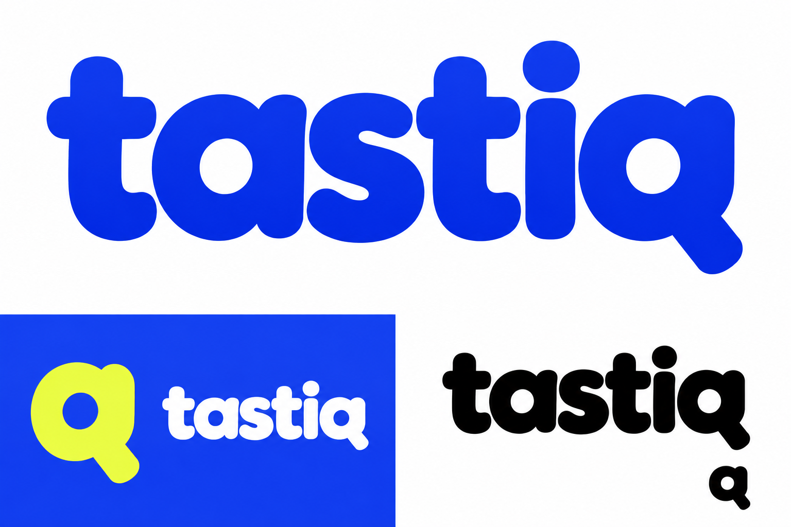

Пульс
Округлый гротеск и цельная Q. Открытый, энергичный характер: легко запомнить имя, удобно узнавать отдельную букву.
Синий + лимонный
Рассмотреть «Пульс» →Три независимых направления. У каждого своё написание, знак и цветовая гамма. Палитра нынешнего сайта здесь ничего не определяет.
Округлый гротеск и цельная Q. Открытый, энергичный характер: легко запомнить имя, удобно узнавать отдельную букву.
Выразительные засечки и свободный хвост q. Культурный, живой характер — как у издания с собственным вкусом. Отдельный знак — буква t.
Узкое заглавное написание и две встречные формы. Сильный, собранный характер: ближе к афише и медиа, с заметным самостоятельным символом.
Сейчас сравниваем самостоятельные цветовые направления. Ни одно ещё не утверждено.

Самый прямой и дружелюбный вариант. Синий держит основное написание, лимонный работает как дополнительный акцент. Q читается цельной буквой и может существовать отдельно.
На следующем этапе стоит облегчить слишком плотные стыки букв и довести Q в маленьком размере.
Концептуальные растровые эскизы, созданные встроенным генератором изображений. Чёрно-белые применения показывают направление формы; окончательный мастер, одинаковые контуры во всех размерах и точные цвета будут зафиксированы при векторной доводке. Цвета можно обсуждать отдельно от шрифта.
Предыдущая серия — для истории